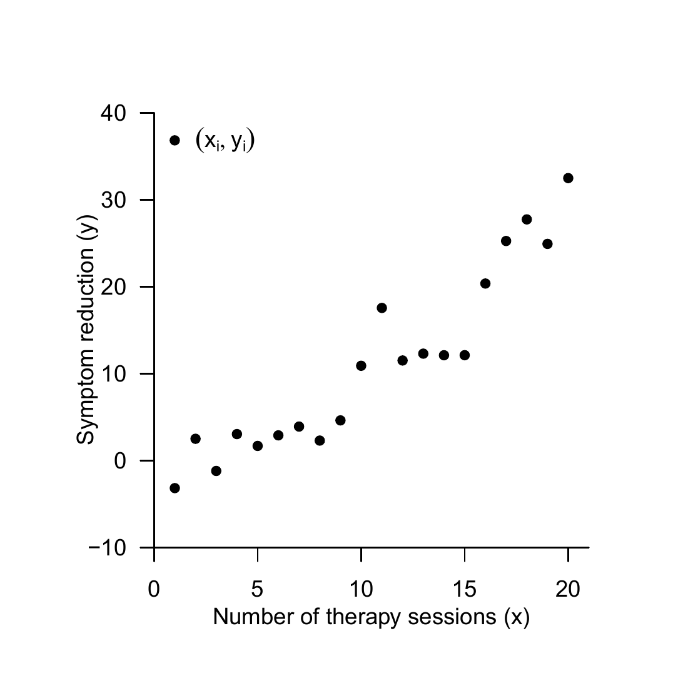
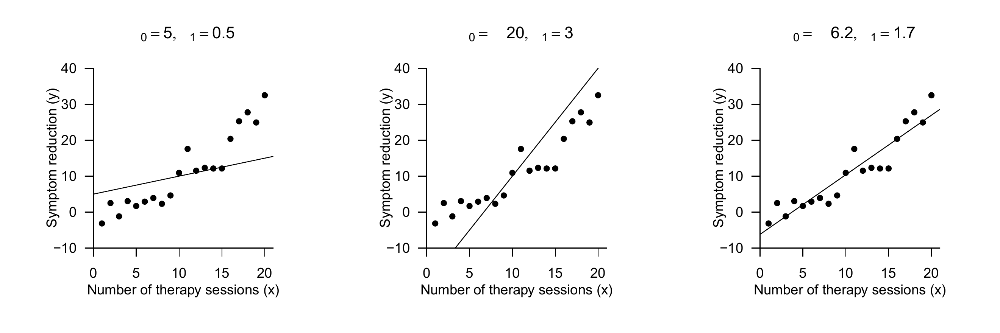
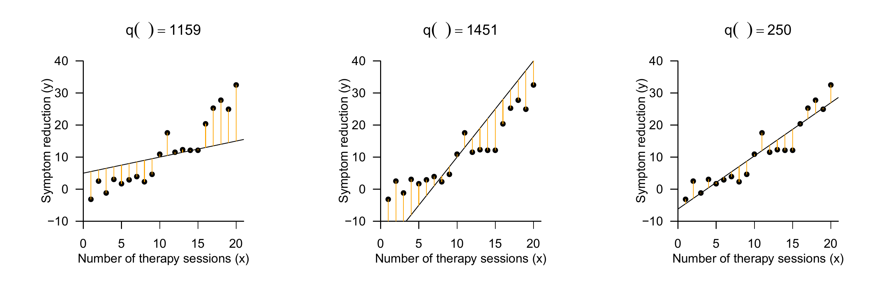
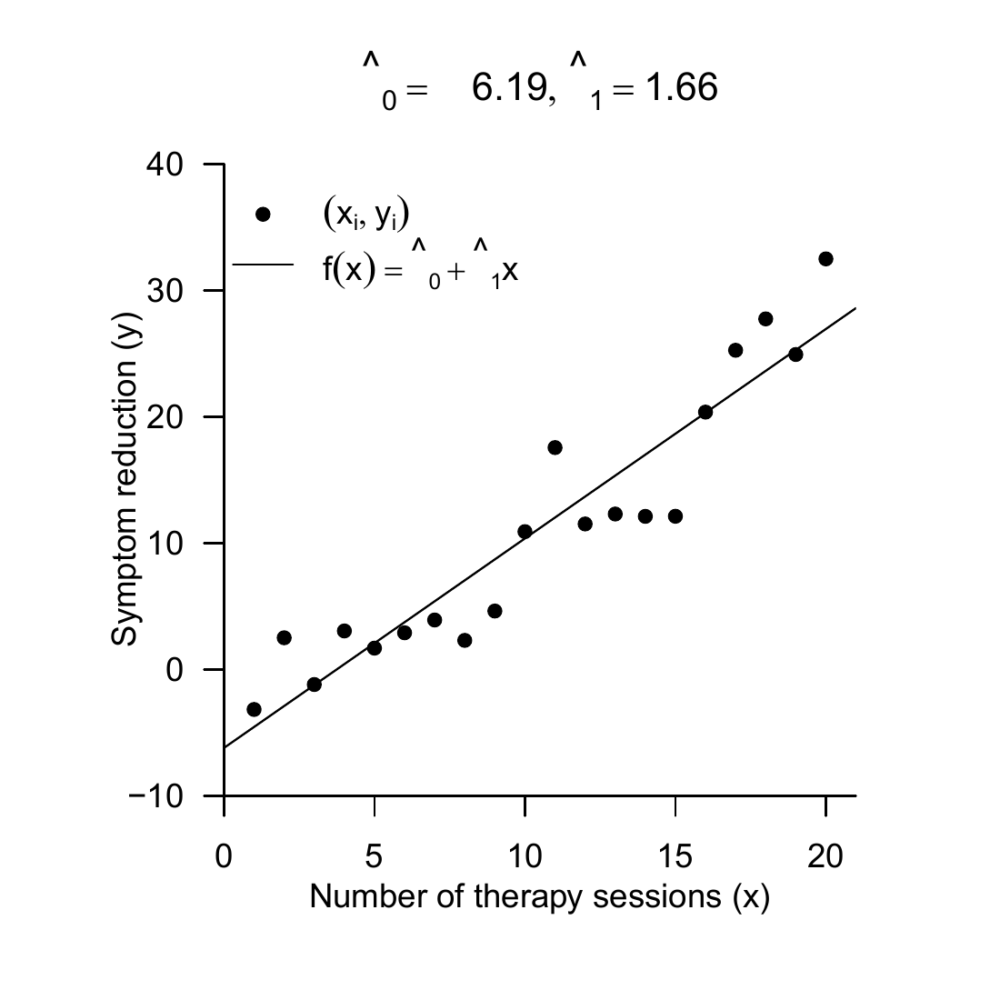
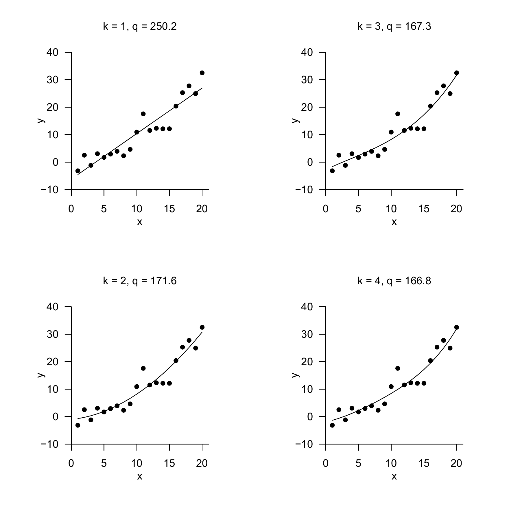
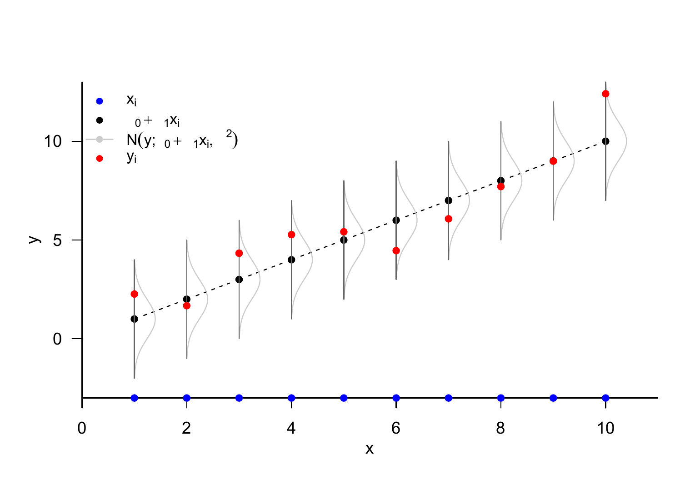

The fundamental goal of regression analyses is to model relationships between independent and dependent variables. A central topic in this context is fitting functions to observed datasets. With the concepts of the fitting line in the framework of the method of least squares and of simple linear regression, we want to approach these central topics of probabilistic data modeling step by step in this section. The concepts of fitting line and simple linear regression differ in one central aspect: for the fitting line, independent and dependent variables are not modeled as random variables; in the framework of simple linear regression, the dependent variable then takes the form of a random variable. Finally, in the context of correlation, both dependent and independent variables are modeled as random variables.
To illustrate the concepts of this section, we consider an example dataset in which the number of psychotherapy sessions as independent variable \(x\) is related to symptom reduction in a group of \(n=20\) patients as dependent variable \(y\) (Figure 34.1). Visual inspection of this dataset suggests that more therapy sessions imply more symptom reduction. The goal of the method of least squares and of simple linear regression is to put this intuitive functional relationship between independent and dependent variable on a quantitative basis.

Figure 34.1: Example dataset.
34.1 Method of least squares
We first define the concept of a fitting line.
Definition 34.1 (Fitting line) For \(\beta:=\left(\beta_{0}, \beta_{1}\right)^{T} \in \mathbb{R}^{2}\), the linear-affine function \[\begin{equation}
f_{\beta}: \mathbb{R} \rightarrow \mathbb{R}, x \mapsto f_{\beta}(x):=\beta_{0}+\beta_{1} x
\end{equation}\] for which, for a dataset \(\left\{\left(x_{1}, y_{1}\right), \ldots,\left(x_{n}, y_{n}\right)\right\} \subset \mathbb{R}^{2}\), the function \[\begin{equation}
q: \mathbb{R}^{2} \rightarrow \mathbb{R}_{\geq 0}, \beta \mapsto q(\beta):=\sum_{i=1}^{n}\left(y_{i}-f_{\beta}\left(x_{i}\right)\right)^{2}=\sum_{i=1}^{n}\left(y_{i}-\left(\beta_{0}+\beta_{1} x_{i}\right)\right)^{2}
\end{equation}\] of the squared vertical deviations of the \(y_{i}\) from the function values \(f_{\beta}\left(x_{i}\right)\) attains its minimum is called the fitting line for the dataset \(\left\{\left(x_{1}, y_{1}\right), \ldots,\left(x_{n}, y_{n}\right)\right\}\).
The fitting line is thus a linear-affine function of the form \[\begin{equation}
f_{\beta}: \mathbb{R} \rightarrow \mathbb{R}, x \mapsto f_{\beta}(x):=\beta_{0}+\beta_{1} x
\end{equation}\]Figure 34.2 shows three linear-affine functions parameterized by different values of \(\beta_{0}\) and \(\beta_{1}\), together with the value set of the example dataset.
As with all linear-affine functions, for \(f_{\beta}\) the value of \(\beta_{0}\) corresponds to the value that \(f_{\beta}\) takes for \(x=0\), \[\begin{equation}
f_{\beta}(0)=\beta_{0}+\beta_{1} \cdot 0=\beta_{0}
\end{equation}\] and hence graphically to the intersection of the function graph with the \(y\)-axis. Because \(\beta_{0}\) therefore corresponds to the offset of the function graph from \(y=0\) at \(x=0\), \(\beta_{0}\) is also often called the offset parameter. Analogously, as with all linear-affine functions, the value of \(\beta_{1}\) corresponds to the function-value difference per unit argument difference. For example, for \(\beta_{0}=5\) and \(\beta_{1}=0.5\) we have \[\begin{equation}
\begin{aligned}
& f_{\beta}(2)-f_{\beta}(1)=(5+0.5 \cdot 2)-(5+0.5 \cdot 1)=1-0.5=0.5 \\
& f_{\beta}(9)-f_{\beta}(8)=(5+0.5 \cdot 9)-(5+0.5 \cdot 8)=9.5-8=0.5
\end{aligned}
\end{equation}\] Thus, an argument difference of 1 results in a function-value difference of 0.5. \(\beta_{1}\) therefore encodes the strength of the change in function values per unit argument difference and hence the slope of the graph of the linear-affine function. Accordingly, \(\beta_{1}\) is called the slope parameter.
By definition, however, the fitting line is not an arbitrary linear-affine function of the form \(f_{\beta}\), but precisely the one that, for a given dataset \(\left\{\left(x_{1}, y_{1}\right), \ldots,\left(x_{n}, y_{n}\right)\right\}\), minimizes the sum of squared vertical deviations \[\begin{equation}
q(\beta):=\sum_{i=1}^{n}\left(y_{i}-\left(\beta_{0}+\beta_{1} x_{i}\right)\right)^{2}
\end{equation}\] For a fixed dataset of \(\left(x_{i}, y_{i}\right)\) pairs, the value of this sum depends on the values of \(\beta_{0}\) and \(\beta_{1}\) and can therefore be minimized by choosing suitable values of \(\beta_{0}\) and \(\beta_{1}\).

Figure 34.2: Linear-affine functions with different parameter values against the background of the example dataset.
Because a sum of squared deviations between data points and values of the fitting line is minimized here, one also often speaks somewhat imprecisely of the method of least squares. Figure 34.3 shows the vertical deviations between \(y_{i}\) and \(\beta_{0}+\beta_{1} x_{i}\) for \(i=1, \ldots, n\) in the example dataset as orange lines, and the sum of their squares \(q(\beta)\) in the title. For the parameter values \(\beta_{0}=-6.2\) and \(\beta_{1}=1.7\) (cf. Figure 34.2), this sum attains its smallest value.

Figure 34.3: Vertical deviations and sums of squares for different parameter values.
Concrete formulas for determining the parameter values of the fitting line are provided by Theorem 34.1.
Theorem 34.1 (Fitting line) For a dataset \(\left\{\left(x_{1}, y_{1}\right), \ldots,\left(x_{n}, y_{n}\right)\right\} \subset \mathbb{R}^{2}\), the fitting line has the form \[\begin{equation}
f_{\beta}: \mathbb{R} \rightarrow \mathbb{R}, x \mapsto f_{\beta}(x):=\hat{\beta}_{0}+\hat{\beta}_{1} x
\end{equation}\] where, with the sample covariance \(c_{x y}\) of the \(\left(x_{i}, y_{i}\right)\) values, the sample variance \(s_{x}^{2}\) of the \(x_{i}\) values, and the sample means \(\bar{x}\) and \(\bar{y}\) of the \(x_{i}\) and \(y_{i}\) values, respectively, it holds that \[\begin{equation}
\hat{\beta}_{1}=\frac{c_{x y}}{s_{x}^{2}} \text { and } \hat{\beta}_{0}=\bar{y}-\hat{\beta}_{1} \bar{x} \text {. }
\end{equation}\]
Proof. We consider the sum of squared vertical deviations of the \(y_{i}\) from the function values \(f\left(x_{i}\right)\) as a function of \(\beta_{0}\) and \(\beta_{1}\), and determine values \(\hat{\beta}_{0}\) and \(\hat{\beta}_{1}\) for which this function attains its minimum, that is, for which the sum of squared vertical deviations of the \(y_{i}\) from the function values \(f\left(x_{i}\right)\) becomes minimal. We consider the function \[\begin{equation}
q: \mathbb{R}^{2} \rightarrow \mathbb{R},\left(\beta_{0}, \beta_{1}\right) \mapsto q\left(\beta_{0}, \beta_{1}\right):=\sum_{i=1}^{n}\left(y_{i}-\left(\beta_{0}+\beta_{1} x\right)\right)^{2}
\end{equation}\] To determine the minimum of this function, we first compute the partial derivatives with respect to \(\beta_{0}\) and \(\beta_{1}\) and set them equal to 0. We first obtain \[\begin{equation}
\begin{aligned}
\frac{\partial}{\partial \beta_{0}} q\left(\beta_{0}, \beta_{1}\right) & =\frac{\partial}{\partial \beta_{0}}\left(\sum_{i=1}^{n}\left(y_{i}-\left(\beta_{0}+\beta_{1} x_{i}\right)\right)^{2}\right) \\
& =\sum_{i=1}^{n} \frac{\partial}{\partial \beta_{0}}\left(y_{i}-\left(\beta_{0}+\beta_{1} x_{i}\right)\right)^{2} \\
& =\sum_{i=1}^{n} 2\left(y_{i}-\left(\beta_{0}+\beta_{1} x_{i}\right)\right) \frac{\partial}{\partial \beta_{0}}\left(y_{i}-\beta_{0}-\beta_{1} x_{i}\right) \\
& =-2 \sum_{i=1}^{n}\left(y_{i}-\beta_{0}-\beta_{1} x_{i}\right) .
\end{aligned}
\end{equation}\] Furthermore, we obtain \[\begin{equation}
\begin{aligned}
\frac{\partial}{\partial \beta_{1}} q\left(\beta_{0}, \beta_{1}\right) & =\frac{\partial}{\partial \beta_{1}}\left(\sum_{i=1}^{n}\left(y_{i}-\left(\beta_{0}+\beta_{1} x_{i}\right)\right)^{2}\right) \\
& =\sum_{i=1}^{n} \frac{\partial}{\partial \beta_{1}}\left(y_{i}-\left(\beta_{0}+\beta_{1} x_{i}\right)\right)^{2} \\
& =\sum_{i=1}^{n} 2\left(y_{i}-\left(\beta_{0}+\beta_{1} x_{i}\right)\right) \frac{\partial}{\partial \beta_{1}}\left(y_{i}-\beta_{0}-\beta_{1} x_{i}\right) \\
& =-2 \sum_{i=1}^{n}\left(y_{i}-\beta_{0}-\beta_{1} x_{i}\right) x_{i} .
\end{aligned}
\end{equation}\] Setting both partial derivatives equal to zero then yields \[\begin{equation}
\begin{aligned}
\frac{\partial}{\partial \beta_{0}} q\left(\beta_{0}, \beta_{1}\right) & =0 \text { and } \frac{\partial}{\partial \beta_{1}} q\left(\beta_{0}, \beta_{1}\right)=0 \\
\Leftrightarrow-2 \sum_{i=1}^{n}\left(y_{i}-\beta_{0}-\beta_{1} x_{i}\right) & =0 \text { and }-2 \sum_{i=1}^{n}\left(y_{i}-\beta_{0}-\beta_{1} x_{i}\right) x_{i}=0 \\
\Leftrightarrow \sum_{i=1}^{n}\left(y_{i}-\beta_{0}-\beta_{1} x_{i}\right) & =0 \text { and } \sum_{i=1}^{n}\left(y_{i}-\beta_{0}-\beta_{1} x_{i}\right) x_{i}=0
\end{aligned}
\end{equation}\] and further \[\begin{equation}
\begin{gathered}
\sum_{i=1}^{n} y_{i}-\sum_{i=1}^{n} \beta_{0}-\beta_{1} \sum_{i=1}^{n} x_{i}=0 \text { and } \sum_{i=1}^{n} y_{i} x_{i}-\sum_{i=1}^{n} \beta_{0} x_{i}-\beta_{1} \sum_{i=1}^{n} x_{i}^{2}=0 \\
\Leftrightarrow \beta_{0} n+\beta_{1} \sum_{i=1}^{n} x_{i}=\sum_{i=1}^{n} y_{i} \text { and } \beta_{0} \sum_{i=1}^{n} x_{i}+\beta_{1} \sum_{i=1}^{n} x_{i}^{2}=\sum_{i=1}^{n} y_{i} x_{i}
\end{gathered}
\end{equation}\] The resulting system of equations \[\begin{equation}
\begin{aligned}
\beta_{0} n+\beta_{1} \sum_{i=1}^{n} x_{i} & =\sum_{i=1}^{n} y_{i} \\
\beta_{0} \sum_{i=1}^{n} x_{i}+\beta_{1} \sum_{i=1}^{n} x_{i}^{2} & =\sum_{i=1}^{n} y_{i} x_{i}
\end{aligned}
\end{equation}\] is called the system of normal equations and describes the necessary condition for a minimum of \(q\). Solving this system of equations for \(\beta_{0}\) and \(\beta_{1}\) then yields the values \(\hat{\beta}_{0}\) and \(\hat{\beta}_{1}\) of the theorem. To see this, we first note that the first equation of the system of normal equations implies \[\begin{equation}
n \hat{\beta}_{0}+\hat{\beta}_{1} \sum_{i=1}^{n} x_{i}=\sum_{i=1}^{n} y_{i} \Leftrightarrow \hat{\beta}_{0}+\hat{\beta}_{1} \bar{x}=\bar{y} \Leftrightarrow \hat{\beta}_{0}=\bar{y}-\hat{\beta}_{1} \bar{x}
\end{equation}\] Substituting the form of \(\hat{\beta}_{0}\) into the second equation of the system of normal equations first yields \[\begin{equation}
\begin{aligned}
\hat{\beta}_{0} \sum_{i=1}^{n} x_{i}+\hat{\beta}_{1} \sum_{i=1}^{n} x_{i}^{2} & =\sum_{i=1}^{n} y_{i} x_{i} \\
\Leftrightarrow\left(\bar{y}-\hat{\beta}_{1} \bar{x}\right) \sum_{i=1}^{n} x_{i}+\hat{\beta}_{1} \sum_{i=1}^{n} x_{i}^{2} & =\sum_{i=1}^{n} y_{i} x_{i} \\
\Leftrightarrow \bar{y} \sum_{i=1}^{n} x_{i}-\hat{\beta}_{1} \bar{x} \sum_{i=1}^{n} x_{i}+\hat{\beta}_{1} \sum_{i=1}^{n} x_{i}^{2} & =\sum_{i=1}^{n} y_{i} x_{i} \\
\Leftrightarrow-\hat{\beta}_{1} \bar{x} \sum_{i=1}^{n} x_{i}+\hat{\beta}_{1} \sum_{i=1}^{n} x_{i}^{2} & =\sum_{i=1}^{n} y_{i} x_{i}-\bar{y} \sum_{i=1}^{n} x_{i} \\
\Leftrightarrow \hat{\beta}_{1}\left(\sum_{i=1}^{n} x_{i}^{2}-\bar{x} \sum_{i=1}^{n} x_{i}\right) & =\sum_{i=1}^{n} y_{i} x_{i}-\bar{y} \sum_{i=1}^{n} x_{i} .
\end{aligned}
\end{equation}\] We now first note that \[\begin{equation}
\begin{aligned}
\sum_{i=1}^{n} x_{i}^{2}-\bar{x} \sum_{i=1}^{n} x_{i} & =\sum_{i=1}^{n} x_{i}^{2}-2 \bar{x} \sum_{i=1}^{n} x_{i}+\bar{x} \sum_{i=1}^{n} x_{i} \\
& =\sum_{i=1}^{n} x_{i}^{2}-2 \bar{x} \sum_{i=1}^{n} x_{i}+n\left(\frac{1}{n} \sum_{i=1}^{n} x_{i}\right) \bar{x} \\
& =\sum_{i=1}^{n} x_{i}^{2}-2 \bar{x} \sum_{i=1}^{n} x_{i}+n \bar{x}^{2} \\
& =\sum_{i=1}^{n}\left(x_{i}^{2}-2 \bar{x} x_{i}+\bar{x}^{2}\right) \\
& =\sum_{i=1}^{n}\left(x_{i}-\bar{x}\right)^{2}
\end{aligned}
\end{equation}\] Furthermore, we first note that \[\begin{equation}
\begin{aligned}
\sum_{i=1}^{n} y_{i} x_{i}-\bar{y} \sum_{i=1}^{n} x_{i} & =\sum_{i=1}^{n} y_{i} x_{i}-\bar{y} \sum_{i=1}^{n} x_{i}-n \bar{y} \bar{x}+n \bar{y} \bar{x} \\
& =\sum_{i=1}^{n} y_{i} x_{i}-\bar{y} \sum_{i=1}^{n} x_{i}-\sum_{i=1}^{n} y_{i} \bar{x}+\sum_{i=1}^{n} \bar{y} \bar{x} \\
& =\sum_{i=1}^{n} y_{i} x_{i}-\sum_{i=1}^{n} y_{i} \bar{x}-\sum_{i=1}^{n} \bar{y} x_{i}+\sum_{i=1}^{n} \bar{y} \bar{x} \\
& =\sum_{i=1}^{n}\left(y_{i} x_{i}-y_{i} \bar{x}-\bar{y} x_{i}+\bar{y} \bar{x}\right) \\
& =\sum_{i=1}^{n}\left(y_{i}-\bar{y}\right)\left(x_{i}-\bar{x}\right) .
\end{aligned}
\end{equation}\] Continuing from (1.16), we then obtain \[\begin{equation}
\begin{aligned}
\hat{\beta}_{1}\left(\sum_{i=1}^{n} x_{i}^{2}-\bar{x} \sum_{i=1}^{n} x_{i}\right) & =\sum_{i=1}^{n} y_{i} x_{i}-\bar{y} \sum_{i=1}^{n} x_{i} \\
\Leftrightarrow \hat{\beta}_{1}\left(\sum_{i=1}^{n}\left(x_{i}-\bar{x}\right)^{2}\right) & =\sum_{i=1}^{n}\left(y_{i}-\bar{y}\right)\left(x_{i}-\bar{x}\right) \\
\Leftrightarrow \hat{\beta}_{1} & =\frac{\sum_{i=1}^{n}\left(y_{i}-\bar{y}\right)\left(x_{i}-\bar{x}\right)}{\sum_{i=1}^{n}\left(x_{i}-\bar{x}\right)^{2}} \\
\Leftrightarrow \hat{\beta}_{1} & =\frac{c_{x y}}{s_{x}^{2}} .
\end{aligned}
\end{equation}\]
Theorem 34.1 states that, for a given dataset \(\left\{\left(x_{1}, y_{1}\right), \ldots,\left(x_{n}, y_{n}\right)\right\}\), the parameter values that minimize the sum of squared vertical deviations for a linear-affine function can be computed using the sample means of the \(x_{i}\) and \(y_{i}\) values, the sample variance of the \(x_{i}\) values, and the sample covariance of the \(x_{i}\) and \(y_{i}\) values. The terminology is oriented toward the concepts of descriptive statistics; in particular, the \(x_{i}\) values are often not understood as realizations of random variables, but the term sample is nevertheless used. From an applied perspective, according to Theorem 34.1, the parameters of the fitting line can thus be determined using the familiar functions for evaluating descriptive statistics. The following R code demonstrates this.
# read example datasetD =read.csv("./_data/501-regression.csv")# sample statisticsx_bar =mean(D$x_i) # sample mean of x_i valuesy_bar =mean(D$y_i) # sample mean of y_i valuess2x =var(D$x_i) # sample variance of x_i valuescxy =cov(D$x_i, D$y_i) # sample covariance of (x_i,y_i) values# fitting-line parametersbeta_1_hat = cxy/s2x # \hat{\beta}_1, slope parameterbeta_0_hat = y_bar - beta_1_hat*x_bar # \hat{\beta}_0, offset parameter# outputcat("beta_0_hat:", beta_0_hat,"\nbeta_1_hat:", beta_1_hat)
beta_0_hat: -6.194704
beta_1_hat: 1.657055
A typical visualization of the fitting line of a dataset as in Figure 34.4 is implemented by the following \(\mathbf{R}\) code.
The idea of minimizing, for a given dataset of \(\left(x_{i}, y_{i}\right)\) pairs, the sum of squared vertical deviations between a function of the \(x_{i}\) values and the \(y_{i}\) values, and thus fitting a function as well as possible to a set of values, is not restricted to linear-affine functions. The following definition generalizes the definition of the fitting line to polynomial functions of arbitrary degree.

Figure 34.4: Fitting line for the example dataset.
Definition 34.2 (Fitting polynomial) For \(\beta:=\left(\beta_{0}, \ldots, \beta_{k}\right)^{T} \in \mathbb{R}^{k+1}\), the polynomial function of degree \(k\)\[\begin{equation}
f_{\beta}: \mathbb{R} \rightarrow \mathbb{R}, x \mapsto f_{\beta}(x):=\sum_{i=0}^{k} \beta_{i} x^{i}
\end{equation}\] for which, for a dataset \(\left\{\left(x_{1}, y_{1}\right), \ldots,\left(x_{n}, y_{n}\right)\right\} \subset \mathbb{R}^{2}\), the function \[\begin{equation}
q: \mathbb{R}^{k+1} \rightarrow \mathbb{R}_{\geq 0}, \beta \mapsto q(\beta):=\sum_{i=1}^{n}\left(y_{i}-f_{\beta}\left(x_{i}\right)\right)^{2}=\sum_{i=1}^{n}\left(y_{i}-\sum_{i=0}^{k} \beta_{i} x^{i}\right)^{2}
\end{equation}\] of the squared vertical deviations of the \(y_{i}\) from the function values \(f_{\beta}\left(x_{i}\right)\) attains its minimum is called the fitting polynomial of degree \(k\) for the dataset \(\left\{\left(x_{1}, y_{1}\right), \ldots,\left(x_{n}, y_{n}\right)\right\}\).
The fitting line is therefore the fitting polynomial of first degree. We do not want to deepen the concept of the fitting polynomial here; in particular, we will determine the parameter values \(\hat{\beta}_{0}, \ldots, \hat{\beta}_{k}\) for which the function \(q\) attains its minimum in general at a later point in the framework of the theory of the general linear model. In Figure 34.5, we visualize the fitting polynomials of first to fourth degree for the example dataset; the value of the function \(q\) at the minimum is shown in the title in each case.

Figure 34.5: Fitting polynomials of first to fourth degree for the example dataset.
34.2 Simple linear regression
A fitting line allows statements about unobserved values of the dependent variable. However, a fitting line allows only implicit statements about the uncertainty associated with fitting a linear-affine function to a dataset. In simple linear regression, the idea of a fitting line is extended by a probabilistic component. In the sense of frequentist inference, simple linear regression thus makes it possible in particular to state confidence intervals for the fitting-line parameters and to carry out hypothesis tests concerning the fitting-line parameters. Here, we first want to consider only the model of simple linear regression and the maximum likelihood estimation of the fitting-line parameters based on it.
We then treat the assessment of the uncertainty associated with this estimation as well as parameter-centered hypothesis tests at a later point, first in the context of the general linear model. We begin with the following definition.
Definition 34.3 (Simple linear regression model) Let \[
y_{i}=\beta_{0}+\beta_{1} x_{i}+\varepsilon_{i} \text { with } \varepsilon_{i} \sim N\left(0, \sigma^{2}\right) \text { i.i.d. for } i=1, \ldots, n
\tag{34.1}\] where
\(y_{i}\) are observable random variables that model values of a dependent variable,
\(x_{i} \in \mathbb{R}\) are fixed predictor values or regressor values that model values of an independent variable,
\(\beta_{0}, \beta_{1} \in \mathbb{R}\) are true, but unknown, offset and slope parameter values, and
\(\varepsilon_{i}\) are independent and identically normally distributed non-observable random variables with true, but unknown, variance parameter \(\sigma^{2}>0\) that model error or disturbance variables.
Then Equation 34.1 is called the simple linear regression model.
In contrast to the fitting line, random variables occur explicitly in the simple linear regression model. Specifically, the simple linear regression model defines how \(n\) observable (dependent) random variables \(y_{i}\) are generated using the values \(x_{i}\) of an independent variable, the parameter values \(\beta_{0}\) and \(\beta_{1}\), and addition of the normally distributed error variables \(\varepsilon_{i}\). The model has three parameters, the offset parameter \(\beta_{0}\), the slope parameter \(\beta_{1}\), and the variance parameter \(\sigma^{2}\) of the normally distributed error variables. Addition of the fixed values \(\beta_{0}\) and \(\beta_{1} x_{i}\) to the normally distributed random variable \(\varepsilon_{i}\) implies a normal distribution of \(y_{i}\). This is the statement of the following theorem.
Theorem 34.2 (Data distribution of simple linear regression) The simple linear regression model \[\begin{equation}
y_{i}=\beta_{0}+\beta_{1} x_{i}+\varepsilon_{i} \text { with } \varepsilon_{i} \sim N\left(0, \sigma^{2}\right) \text { i.i.d. for } i=1, \ldots, n
\end{equation}\] can equivalently be written, with \(\mu_{i}:=\beta_{0}+\beta_{1} x_{i}\), in the form \[\begin{equation}
y_{i} \sim N\left(\mu_{i}, \sigma^{2}\right) \text { independently for } i=1, \ldots, n
\end{equation}\]
Proof. We show the equivalence for one \(i\); we show the independence of the \(y_{i}\) at a later point in the framework of the general linear model. The equivalence of the two model forms for one \(i\) follows directly from the transformation of normally distributed random variables by linear-affine functions. Specifically, in the present case, for \(\varepsilon_{i} \sim N\left(0, \sigma^{2}\right)\), we have \[\begin{equation}
y_{i}=f\left(\varepsilon_{i}\right) \text { with } f: \mathbb{R} \rightarrow \mathbb{R}, \varepsilon_{i} \mapsto f\left(\varepsilon_{i}\right):=\varepsilon_{i}+\left(\beta_{0}+\beta_{1} x_{i}\right)
\end{equation}\] By the PDF transformation theorem for linear-affine mappings, it then follows that \[\begin{equation}
\begin{aligned}
p_{y_{i}}\left(y_{i}\right) & =\frac{1}{|1|} p_{\varepsilon_{i}}\left(\frac{y_{i}-\beta_{0}-\beta_{1} x_{i}}{1}\right) \\
& =N\left(y_{i}-\beta_{0}-\beta_{1} x_{i} ; 0, \sigma^{2}\right) \\
& =\frac{1}{\sqrt{2 \pi \sigma^{2}}} \exp \left(-\frac{1}{2 \sigma^{2}}\left(y_{i}-\beta_{0}-\beta_{1} x_{i}-0\right)^{2}\right) \\
& =\frac{1}{\sqrt{2 \pi \sigma^{2}}} \exp \left(-\frac{1}{2 \sigma^{2}}\left(y_{i}-\left(\beta_{0}+\beta_{1} x_{i}\right)\right)^{2}\right) \\
& =N\left(y_{i} ; \beta_{0}+\beta_{1} x_{i}, \sigma^{2}\right) .
\end{aligned}
\end{equation}\] Defining \(\mu_{i}:=\beta_{0}+\beta_{1} x_{i}\) then yields the statement of the theorem.
Theorem 34.2 states in particular that the data variables \(y_{i}\) are univariate normally distributed random variables whose expectation parameters each depend on the value of the independent variable \(x_{i}\). Figure 34.6 visualizes the model and a realization of simple linear regression for true, but unknown, parameter values \(\beta_{0}:=0\), \(\beta_{1}:=1\), and \(\sigma^{2}:=1\).

Figure 34.6: Simple linear regression model for \(\beta_{0}:=0\), \(\beta_{1}:=1\), and \(\sigma^{2}:=1\).
Because the simple linear regression model is a parametric frequentist model, estimators for the model parameters can be obtained using the maximum likelihood principle. In particular, it turns out that the maximum likelihood estimators of the offset and slope parameters are identical to the values of the fitting-line parameters. This is one of the statements of the following theorem. For notational clarity, we omit \({ }^{\mathrm{ML}}\) superscripts for the estimators here.
Theorem 34.3 (Maximum likelihood estimation of simple linear regression)\[\begin{equation}
y_{i}=\beta_{0}+\beta_{1} x_{i}+\varepsilon_{i} \text { with } \varepsilon_{i} \sim N\left(0, \sigma^{2}\right) \text { i.i.d. for } i=1, \ldots, n
\end{equation}\] is the simple linear regression model. Then maximum likelihood estimators of the model parameters \(\beta_{0}, \beta_{1}\), and \(\sigma^{2}\) are given by \[\begin{equation}
\hat{\beta}_{1}:=\frac{c_{x y}}{s_{x}^{2}}, \quad \hat{\beta}_{0}:=\bar{y}-\hat{\beta}_{1} \bar{x} \quad \text { and } \hat{\sigma}^{2}:=\frac{1}{n} \sum_{i=1}^{n}\left(y_{i}-\left(\hat{\beta}_{0}+\hat{\beta}_{1} x_{i}\right)\right)^{2}
\end{equation}\]
Proof. We first show that the fitting-line parameters \(\hat{\beta}_{0}\) and \(\hat{\beta}_{1}\) equal the corresponding maximum likelihood estimators. To this end, we first note that, because of the independence of \(y_{1}, \ldots,y_{n}\), the likelihood function of the simple linear regression model with respect to \(\beta_{0}\) and \(\beta_{1}\) has the form \[\begin{equation}
\begin{aligned}
L: \mathbb{R}^{2} \rightarrow \mathbb{R}_{>0},\left(\beta_{0}, \beta_{1}\right) \mapsto L\left(\beta_{0}, \beta_{1}\right): & =\prod_{i=1}^{n} \frac{1}{\sqrt{2 \pi \sigma^{2}}} \exp \left(-\frac{1}{2 \sigma^{2}}\left(y_{i}-\left(\beta_{0}+\beta_{1} x_{i}\right)\right)^{2}\right) \\
& =\left(2 \pi \sigma^{2}\right)^{-\frac{n}{2}} \exp \left(-\frac{1}{2 \sigma^{2}} \sum_{i=1}^{n}\left(y_{i}-\left(\beta_{0}+\beta_{1} x_{i}\right)\right)^{2}\right)
\end{aligned}
\end{equation}\] Because for the exponential function, for \(a<b \leq 0\), it holds that \(\exp (a)<\exp (b)\), the exponential term of this likelihood function is maximized when the non-negative term \[\begin{equation}
q:=\sum_{i=1}^{n}\left(y_{i}-\left(\beta_{0}+\beta_{1} x_{i}\right)\right)^{2}
\end{equation}\] becomes minimal and hence \(-q\) becomes maximal. In the proof of the form of the fitting line, however, we have already shown that the term (1.30) is minimized for \[\begin{equation}
\hat{\beta}_{1}:=\frac{c_{x y}}{s_{x}^{2}} \text { and } \hat{\beta}_{0}:=\bar{y}-\hat{\beta}_{1} \bar{x}
\end{equation}\] and that therefore \(\hat{\beta}_{1}\) and \(\hat{\beta}_{0}\) maximize the likelihood function.
In a second step, we now consider the likelihood function of the simple linear regression model with respect to \(\sigma^{2}\) at the values of \(\hat{\beta}_{0}\) and \(\hat{\beta}_{1}\). We obtain the likelihood function \[\begin{equation}
L: \mathbb{R}_{>0} \rightarrow \mathbb{R}_{>0}, \sigma^{2} \mapsto L\left(\sigma^{2}\right)=\left(2 \pi \sigma^{2}\right)^{-\frac{n}{2}} \exp \left(-\frac{1}{2 \sigma^{2}} \sum_{i=1}^{n}\left(y_{i}-\left(\hat{\beta}_{0}+\hat{\beta}_{1} x_{i}\right)\right)^{2}\right)
\end{equation}\] and the corresponding log-likelihood function \[\begin{equation}
\ell: \mathbb{R}_{>0} \rightarrow \mathbb{R}, \sigma^{2} \mapsto \ell\left(\sigma^{2}\right)=-\frac{n}{2} \ln 2 \pi-\frac{n}{2} \ln \sigma^{2}-\frac{1}{2 \sigma^{2}} \sum_{i=1}^{n}\left(y_{i}-\left(\hat{\beta}_{0}+\hat{\beta}_{1} x_{i}\right)\right)^{2}
\end{equation}\] Analogously to the derivation of the maximum likelihood estimator for \(\sigma^{2}\) in the normal distribution model, taking into account \[\begin{equation}
\hat{\mu}=\hat{\beta}_{0}+\hat{\beta}_{1} x_{i}
\end{equation}\] we then obtain here \[\begin{equation}
\hat{\sigma}^{2}=\frac{1}{n} \sum_{i=1}^{n}\left(y_{i}-\left(\hat{\beta}_{0}+\hat{\beta}_{1} x_{i}\right)\right)^{2}
\end{equation}\]
In application, maximum likelihood estimation of the parameters of simple linear regression is thus essentially identical to determining the fitting-line parameters, as the following R code for estimating the parameters for the example dataset demonstrates.
# read example datasetfname ="./_data/501-regression.csv"D =read.table(fname, sep =",", header =TRUE)# sample statisticsn =length(D$y_i) # number of data pointsx_bar =mean(D$x_i) # sample mean of x_i valuesy_bar =mean(D$y_i) # sample mean of y_i valuess2x =var(D$x_i) # sample variance of x_i valuescxy =cov(D$x_i, D$y_i) # sample covariance of (x_i,y_i) values# parameter estimatorsbeta_1_hat = cxy/s2x # \hat{\beta}_1, slope parameterbeta_0_hat = y_bar - beta_1_hat*x_bar # \hat{\beta}_0, offset parametersigsqr_hat = (1/n)*sum((D$y_i-(beta_0_hat+beta_1_hat*D$x_i))^2) # variance parameter# outputcat("beta_0_hat:" , beta_0_hat,"\nbeta_1_hat:", beta_1_hat,"\nsigsqr_hat:", sigsqr_hat)
The idea of minimizing a sum of squared deviations when fitting a polynomial function to observed values goes back to the work of Legendre (1805) and Gauss (1809) in the context of determining planetary orbits. A historical classification is provided by Stigler (1981). The concept of regression goes back to Galton (1886). Stigler (1986) provides a detailed historical overview.
Galton, F. (1886). Regression Towards Mediocrity in Hereditary Stature. The Journal of the Anthropological Institute of Great Britain and Ireland, 15, 246. https://doi.org/10.2307/2841583
Gauss, C. F. (1809). Theoria Motus Corporum Coelestium in Sectionibus Conicis Solem Ambientium. Cambridge University Press.
Legendre, A. M. (1805). Nouvelles methodes pour la determination des orbites des cometes. Didot Paris.